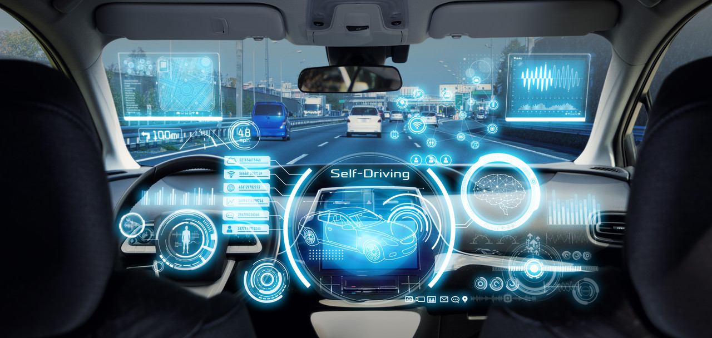
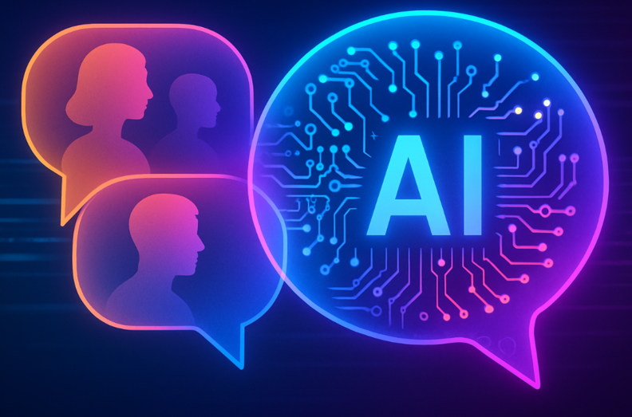

AI In Everyday Life
AI 기술이 일상 속의 다양한 분야에서 어떻게 활용되는지 살펴보자
🧠의료🩻
이미지와 데이터를 분석하여 질병을 진단하고 치료 과정을 지원한다.
- 딥러닝 (Deep Learning)
- 컴퓨터 비전 (Computer Vision)
- 자연어 처리 (NLP)
CT, MRI, X-ray 판독하여 질병을 빠르게 발견할 수 있고, 환자 데이터를 기반으로 맞춤형 치료를 제공한다.

🚗자율주행🚕
도로 환경을 인식하고 안전한 주행을 위한 판단을 수행한다.
- 컴퓨터 비전 (Computer Vision)
- 강화 학습 (Reinforcement Learning)
- 센서 데이터 처리 (Sensor Fusion)
카메라와 센서를 통해 도로 환경과 주변 상황을 실시간으로 인식하고, 최적의 경로와 행동을 결정하여 안전한 주행이 가능하게 한다.
💰금융📊
데이터를 분석하여 금융 서비스의 효율성과 안전성을 높인다.
- 머신 러닝 (Machine Learning)
- 데이터 마이닝 (Data Mining)
- 예측 모델 (Productive Modeling)
머신 러닝을 통해 금융 데이터에서 고객의 소비 패턴을 분석하여 맞춤형 금융 서비스를 제공한다. 이상 거래를 탐지하여 사기나 위험 요소를 빠르게 파악하며, 또한 데이터를 기반으로 투자 예측과 신용 평가를 수행한다.

일상 서비스🤖💬
사용자 맞춤형 서비스를 제공하여 일상 생활의 편의성을 높인다.
- 추천 시스템 (Recommandation System)
- 자언어 처리 (NLP)
- 음성 인식 (Speech Recognition)
추천 시스템을 통해 사용자의 취향에 맞는 콘텐츠를 제공한다. 챗봇이나 음성 비서가 사람의 말을 이해하고 응답한다. 이를 통해 정보 탐색과 일상 업무를 더 빠르고 편리하게 수행할 수 있다.
📱실생활 속 가장 많이 사용하는 AI 기술📊
자세히 알아보고 싶은 기술을 클릭해보세요!
| 순위 | AI 기술 | 설명 | 사용처 |
|---|---|---|---|
| 1 | 자연어 처리 (NLP) | 사람의 언어를 이해하고 대화하는 기술 | 챗봇, 번역기, 음성비서, 검색 |
| 2 | 추천 시스템 | 사용자의 취향을 분석해 콘텐츠를 추천 | 유튜브, 넷플릭스, 쇼핑몰 |
| 3 | 컴퓨터 비전 | 이미지와 영상을 인식하고 분석 | 얼굴인식, CCTV, 의료 영상 분석 |
| 4 | 음성 인식 | 사람의 음성을 텍스트로 변환 | Siri, 음성검색, 자동 자막 |
| 5 | 머신러닝 (예측 분석) | 데이터를 기반으로 미래를 예측 | 주식, 날씨, 광고 추천 |